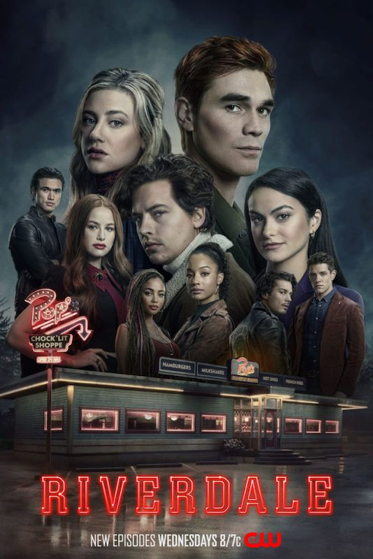
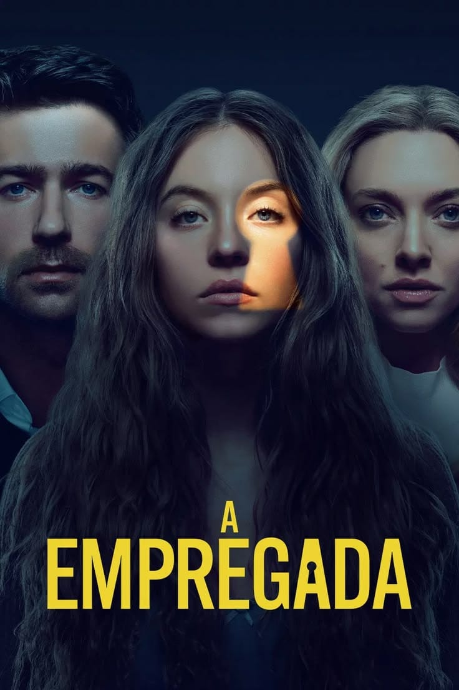

Mergulhe em histórias onde a tensão desafia a alma e o desconhecido revela a verdadeira essência humana.
Permita-se sentir o arrepio no peito, o aperto na garganta e a empatia profunda por personagens que
enfrentam os seus medos mais sombrios para proteger o que amam. Mais do que desvendar mistérios, assista à
jornada da sobrevivência, da coragem e das verdades que só o silêncio do suspense consegue revelar.
Riverdale

A pacata cidade de Riverdale muda para sempre após a morte misteriosa do jovem Jason Blossom. Um grupo de
adolescentes — Archie, Betty, Veronica e Jughead — decide investigar o crime por conta própria,
desencadeando uma sucessão de segredos sombrios, conspirações de gangues, seitas locais e assassinatos
que abalam a comunidade.
Gênero: Drama Teen / Suspense / Mistério | Ano: 2017 | Duração: 7 temporadas (137 episódios de ~42min
cada) | Classificação indicativa: 16 anos
A Empregada

Millie (Sydney Sweeney), uma jovem recém-saída da prisão tentando recomeçar a vida, consegue um emprego
como empregada doméstica na luxuosa mansão de Nina (Amanda Seyfried) e Andrew Winchester. No entanto,
por trás da fachada perfeita da família, a jovem descobre comportamentos estranhos, um quarto trancado
no sótão e segredos manipuladores muito mais perigosos do que seu próprio passado. Baseado no
best-seller de Freida McFadden.
Em uma prisão vertical futurista, os prisioneiros são alojados em dois por andar. Uma plataforma com
comida desce diariamente pelos níveis: os dos andares superiores banquetear-se-ão com fartura, enquanto
os dos andares inferiores passam fome extrema. Goreng, um novo detento voluntário, tenta entender o
sistema e promover uma revolução para garantir a sobrevivência de todos.
Gênero: Suspense Sci-Fi / Terror Psicológico | Ano: 2019 | Duração: 1h 34min | Classificação indicativa:
18 anos